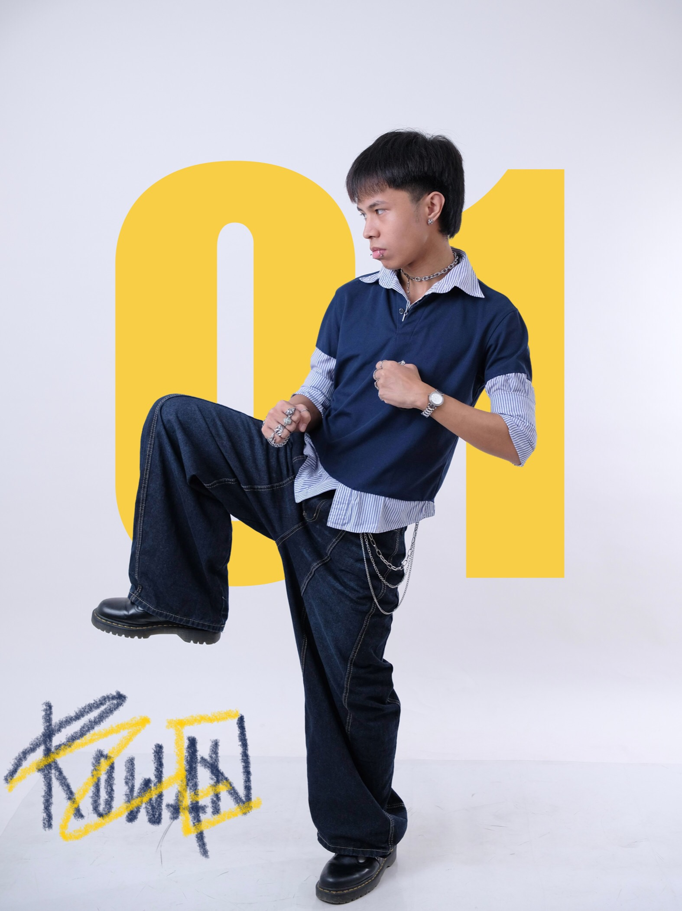
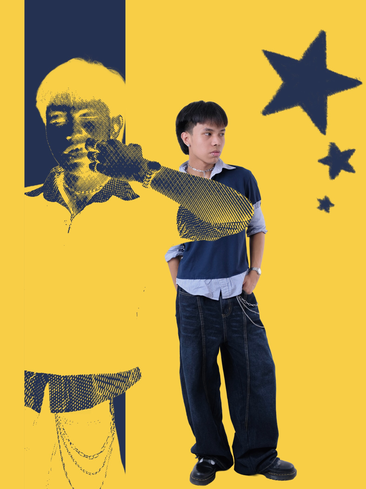
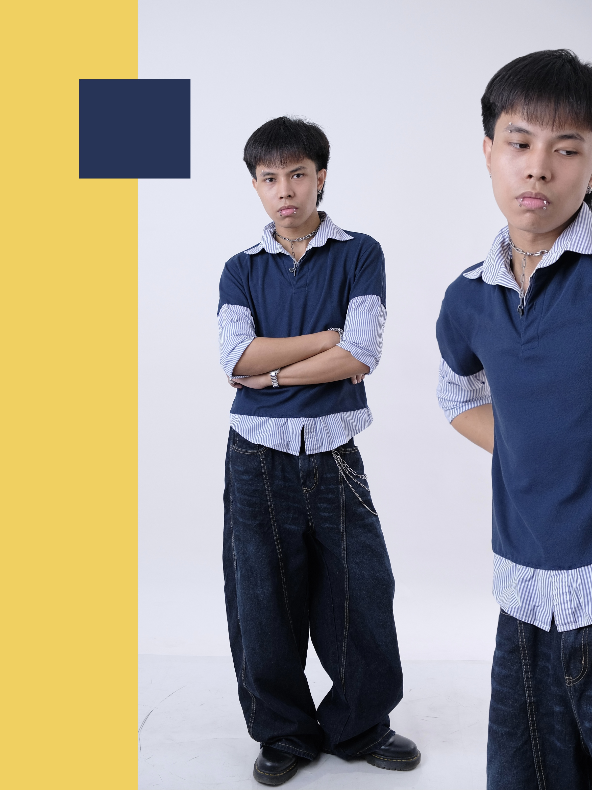

who loves to work on photo and video editing, mainly to post on social media.
I also love thrifting and I upcycle clothes sometimes.
Work with me!Color grading, touch-ups, and designing graphics for social media posts with a very keen eye for aesthetics mixed with a bit of whimsy.
Putting simple and short videos together with cuts, transitions and effects for social media.
Tailoring contents with interesting captions across platforms.
Architecturing simple, responsive websites with the fundamentals of HTML, CSS and JavaScript.
Bachelor of Science in Information Technology, Major in ISD
Strand: HUMSS. Started experimenting with content creation.
Started to take interest in multimedia.


